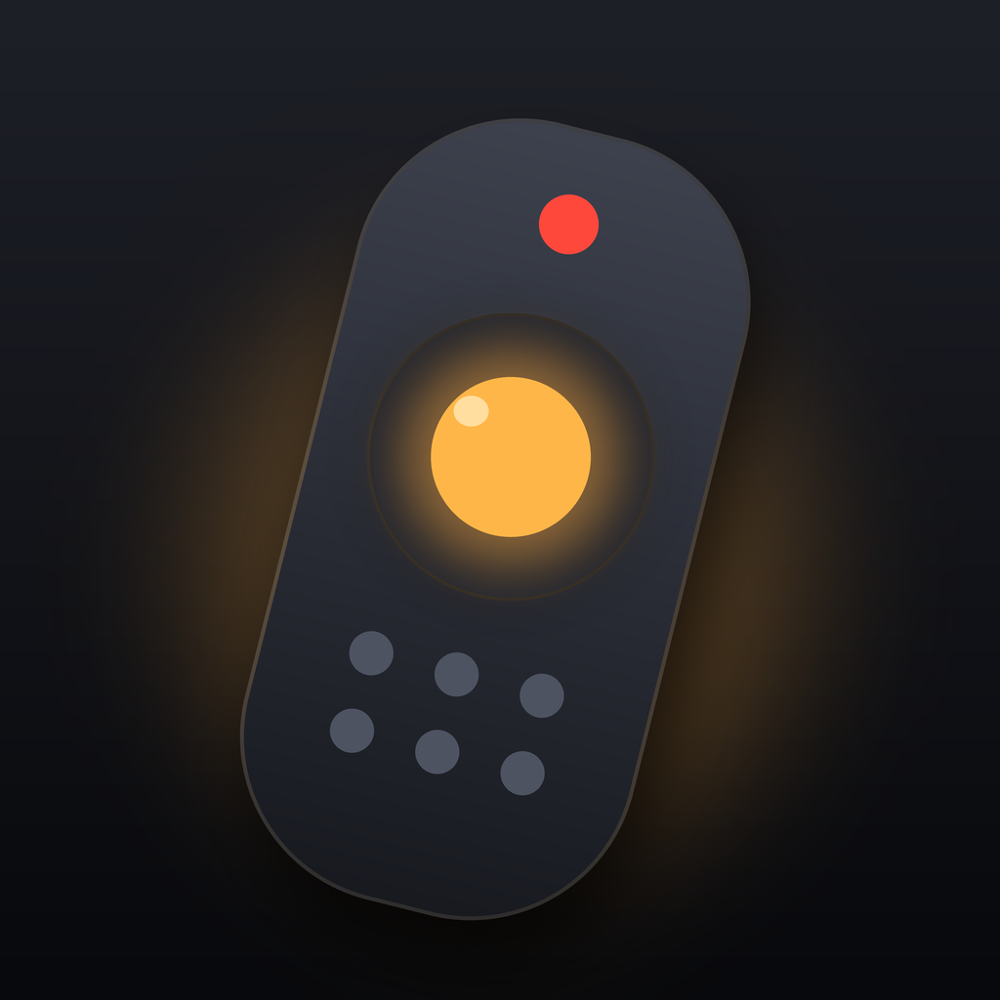

CouchpadSupport
Something not working? Write to seledkovandrey@gmail.com — we usually reply within 1–2 days. In the app, Settings › Contact Support adds your iPhone and TV details to the email automatically.
Frequently asked questions
The app doesn't find my TV
Make sure the TV is on and your iPhone is on the same Wi-Fi network (not a guest network). Check that Couchpad is allowed in iPhone Settings › Privacy & Security › Local Network. Then tap Search again — it takes up to 20 seconds.
How do I connect without the TV's remote?
LG, Sony and Android TV / Google TV show a code on the screen — type it in the app. Samsung asks you to select Allow on the TV once. Roku needs no confirmation.
The code didn't appear on my LG TV
Some webOS versions don't support code pairing. Long-press the TV in the list and choose Confirm with TV Remote, then select Yes on the TV.
Roku doesn't respond to buttons
On the Roku, open Settings › System › Advanced system settings › Control by mobile apps and set it to Default or Permissive.
I can turn the TV off, but not on
Turning on works over Wi-Fi only if the TV supports it. LG: turn on Settings › General › Devices › TV Management › Turn on via Wi-Fi. Samsung: Settings › General › Network › Expert Settings › Power On with Mobile. Turn the TV on with its remote once afterwards so the app can learn it.
The TV says the app is no longer recognized
This happens after a TV reset. Remove the TV in the app and add it again.
How do I restore or cancel Couchpad Pro?
Restore: Settings › Restore Purchases. Cancel: iPhone Settings › your name › Subscriptions › Couchpad, at least 24 hours before renewal.